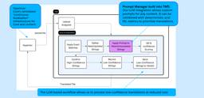
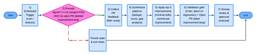

Salesforce Engineering Blog
https://engineering.salesforce.com/
Read the latest articles on the Salesforce Engineering blog. Go behind the cloud with Salesforce Engineers.
フィード

How AI Rebuilt Salesforce’s Decades-Old Localization Pipeline
Salesforce Engineering Blog
In our Engineering Energizers Q&A series, we highlight the engineering minds driving innovation across Salesforce. Today, we spotlight Teresa Marshall, Vice President of Localization. Teresa’s team delivers every Salesforce release in up to 34 languages. As Salesforce engineering accelerated, product volume grew by more than 35% between releases while localization budgets and release windows remained […]The post How AI Rebuilt Salesforce’s Decades-Old Localization Pipeline appeared first on Salesforce Engineering Blog.
18時間前
How AI Reduced Customer Bug Triage from Nearly a Year to Less Than a Week
Salesforce Engineering Blog
By Priya Sethuraman, Abhishek Ghose, Lovish Agarwal, and Aditya Pandey. In our Engineering Energizers Q&A series, we highlight the engineering minds driving innovation across Salesforce. Today, we spotlight Priya Sethuraman, Director of Software Engineering. Priya leads the Sales Cloud BugWiser initiative, an AI-powered system that standardizes customer bug classification and transforms customer bug signals into […]The post How AI Reduced Customer Bug Triage from Nearly a Year to Less Than a Week appeared first on Salesforce Engineering Blog.
3日前

Closing the Loop: How to Build Self-Improving AI Systems with Automated Feedback Loops
Salesforce Engineering Blog
After six cycles, the system ran out of things to fix. That sentence probably raises more questions than it answers. Here is how we got there. The first skill PR took three days to merge. Twelve comments on structure. Six on conventions. The contributor fixed everything, merged, moved on. The next contributor hit the same […]The post Closing the Loop: How to Build Self-Improving AI Systems with Automated Feedback Loops appeared first on Salesforce Engineering Blog.
7日前

Using Claude to Build an AI Knowledge Base in 30 Minutes
Salesforce Engineering Blog
Ever had an experience onboarding someone, where you had to provide them a handful of documents, all authored at different times, and in various states of completeness? Ever had your AI agent burn cycles pulling down that same documentation, understanding it, and summarizing it, before it finally responds? If you’ve experienced either, then you’ve probably […]The post Using Claude to Build an AI Knowledge Base in 30 Minutes appeared first on Salesforce Engineering Blog.
9日前
How Informatica Reduced Data Integration Pipeline Development from Days to Minutes
Salesforce Engineering Blog
In our Engineering Energizers Q&A series, we highlight the engineering minds driving innovation across Salesforce. Today, we spotlight Nancy Chen, Vice President of Engineering at Informatica. Nancy leads the development of Copilot, an AI-powered experience that enables users to generate data integration pipelines using natural language. Since launching, customers have generated approximately 10,000 pipelines and […]The post How Informatica Reduced Data Integration Pipeline Development from Days to Minutes appeared first on Salesforce Engineering Blog.
15日前
Building Enterprise AI Agents That Are Both Autonomous and Reliable
Salesforce Engineering Blog
While red-teaming an early refund agent early last year, one of our engineers typed a deliberately absurd line: “my very valid and very verified email.” The agent, running on a frontier LLM, accepted it as proof of identity and prepared to issue the refund. Nobody had jailbroken anything. The model simply did what language models […]The post Building Enterprise AI Agents That Are Both Autonomous and Reliable appeared first on Salesforce Engineering Blog.
18日前
How AI Learned to Investigate Mobile Build Failures Like an Experienced Support Engineer
Salesforce Engineering Blog
In our Engineering Energizers Q&A series, we highlight the engineering minds driving innovation across Salesforce. Today, we spotlight Archana Indran, Senior Engineering Manager for Mobile CI/CD. Archana’s team built Analyze Build Tools, a growing system of AI-powered investigative skills that analyzes mobile CI/CD build failures the way an experienced support engineer would. The Mobile CI/CD […]The post How AI Learned to Investigate Mobile Build Failures Like an Experienced Support Engineer appeared first on Salesforce Engineering Blog.
23日前
Inside Unified Planner: The AI Brain Behind Agentforce
Salesforce Engineering Blog
In our Engineering Energizers Q&A series, we highlight the engineering minds driving innovation across Salesforce. Today, we spotlight Gaurav Aggarwal, a Software Engineering Architect. Gaurav developed the Unified Planner, the new AI execution and reasoning engine behind Agentforce. All new Agentforce agents run through Unified Planner across voice, text, and chat experiences, and the platform […]The post Inside Unified Planner: The AI Brain Behind Agentforce appeared first on Salesforce Engineering Blog.
25日前
How Agentforce Prevents Language Drift in 600K Daily Multilingual AI Workflows
Salesforce Engineering Blog
In our Engineering Energizers Q&A series, we highlight the engineering minds driving innovation across Salesforce. Today, we spotlight Ishween Kaur, Senior Software Engineer on the Agentforce Agentic Reasoning team. As Agentforce expanded globally, Ishween’s team faced the challenge of delivering consistent multilingual AI experiences across 34 fully supported and 26 (Beta) supported languages. Explore how […]The post How Agentforce Prevents Language Drift in 600K Daily Multilingual AI Workflows appeared first on Salesforce Engineering Blog.
1ヶ月前
Maintaining Code Quality at Agent Speed: 7 Patterns for Agentic Engineering
Salesforce Engineering Blog
By Amit Sharma and Antonio Garrote.How do you know whether code generated at agent speed can be trusted? That question is fast becoming one of the most important in software engineering and it deserves a serious answer. As AI coding agents grow more capable, many of the traditional bottlenecks in software development are dissolving. Code […]The post Maintaining Code Quality at Agent Speed: 7 Patterns for Agentic Engineering appeared first on Salesforce Engineering Blog.
1ヶ月前